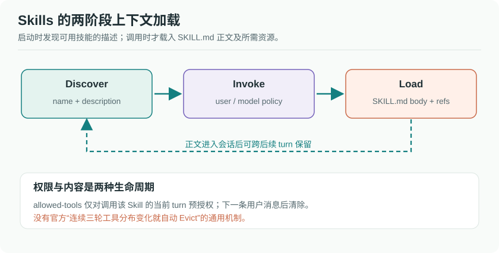
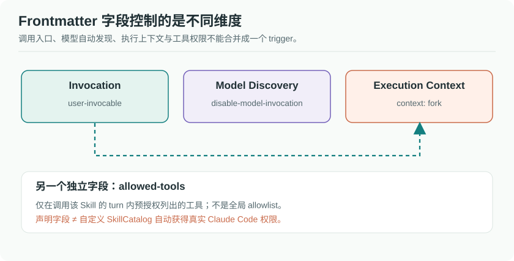

实现 Skills Runtime：发现、按需加载与安全调用
从 SKILL.md 的真实 frontmatter 出发，区分用户调用、模型调用、fork 上下文和 turn-scoped 工具预授权，并构建安全的离线技能目录。
为什么把专业知识写进 System Prompt 会变成负担
一个 Agent 可以同时面对代码审查、数据库迁移、测试、部署与文档任务。若把每个领域的完整操作手册都常驻在基础指令中，模型每次都要携带与当前任务无关的知识；若把全部流程硬编码进一个提示词，又难以按需维护和复用。Skills 的关键不是“关键词触发器”，而是先发现可用能力，再按任务加载具体指令。
先区分四类机制：CLAUDE.md 提供持续项目约定；Skills 封装可按需调用的工作流程与参考资料；Hooks 在生命周期事件上运行确定性逻辑；MCP 提供外部工具和数据能力。它们可以组合，但不是同一层。

SKILL.md：YAML frontmatter 与分层文件布局
一个 Skill 至少包含一个目录和 SKILL.md。常见布局如下：
.claude/skills/
code-review/
SKILL.md
references/
checklist.md
scripts/
summarize.py---
name: code-review
description: Review a pull request for correctness and security.
disable-model-invocation: false
user-invocable: true
context: fork
agent: Explore
---
# Code review
1. Read the changed files.
2. Check tests and error handling.
3. Report findings with file and line evidence.
For the complete checklist, read references/checklist.md.官方 frontmatter 字段包括 name、description、when_to_use、argument-hint、arguments、disable-model-invocation、user-invocable、allowed-tools、disallowed-tools、model、effort、context、agent、background、hooks、paths、shell、metadata、license 和 compatibility。所有字段都不是必填；其中 description 是最重要的自动发现线索。
注意：Claude Code 的扩展字段不等于 Agent Skills 开放规范的通用字段。将 Skill 上传到其他产品或 API 前，必须按目标运行环境核对 frontmatter 兼容性。

两个容易混淆的开关：user-invocable 与 disable-model-invocation
| 设置 | 用户可用 /name | 模型自动调用 | 典型用途 |
|---|---|---|---|
| 默认 | 是 | 是 | 日常可复用任务 |
disable-model-invocation: true | 是 | 否 | 部署、发布等需要用户决定时机的操作 |
user-invocable: false | 否 | 是 | 背景知识型 Skill |
这两个字段并非互为别名。用户可调用但禁止模型自行调用的发布 Skill，仍可通过用户明确输入的 /deploy 启动；背景知识 Skill 则可以由模型在相关任务中加载，但不出现在用户的命令菜单里。
Skill 的上下文生命周期：正文不会在每次工具调用后自动卸载
普通会话启动时，Claude Code 把可用 Skill 的描述放进发现上下文，完整正文只在调用时加载。调用后的正文作为一条消息留在后续会话上下文中；再次调用相同内容时，不会简单重复注入。自动压缩会在预算约束下保留已调用 Skill 的内容。
另一方面，allowed-tools 只在调用该 Skill 的当前 turn 预授权工具，下一条用户消息后即清除。Skill 内容保留，不代表工具授权也持续保留。不能将这套生命周期描述成“任务主题切换时自动移除 Skill”，更不能假定固定 8192 token 技能预算。
Supporting Files、动态上下文与 fork 上下文
长参考资料应放在独立文件中，Skill 正文只说明何时读取。Claude Code 还支持用 ${CLAUDE_SKILL_DIR} 指向当前技能目录，用 !`command` 在发送正文前注入命令输出。命令会受正常权限规则检查；输出作为普通文本注入，不会再被递归解析为下一层命令。
context: fork 会启动一个新的 subagent 上下文。这个上下文不会继承当前对话历史，因此 Skill 必须把任务、输入和输出要求写完整；它不是当前会话的完整副本，也不是操作系统沙箱。需要当前对话历史时，应使用会话 fork 或其他适合的委派机制。
工具权限不是 frontmatter 装饰
allowed-tools 会给当前 Skill 调用 turn 中列出的工具预授权。审核来自仓库的 Skill 时，必须把该字段当作权限配置审查，不能只看 Markdown 正文。
构建一个安全的离线 SkillCatalog
examples/skill_runtime.py 实现一个教学用 catalog：发现阶段只返回名称和描述；显式调用阶段才返回正文；调用权限分别检查用户入口与模型入口；相对引用文件不能逃出 Skill 目录。
catalog = SkillCatalog(Path(".claude/skills"))
for meta in catalog.discover():
print(meta.name, meta.description)
if catalog.can_invoke("code-review", "user"):
skill = catalog.invoke("code-review", "user")
print(skill.body)代码只支持一小部分 frontmatter 语法，不是完整 YAML 解析器，也不会运行 Skill 正文、命令替换、Hook、MCP 或真实工具授权。生产实现应使用完整 YAML 解析器、按官方字段版本化，并将执行与权限交给宿主运行时。
测试：错误字段、路径逃逸和权限开关
运行 python3 -m unittest discover -s examples -p 'test_*.py'。测试验证：描述元数据与正文分阶段读取；disable-model-invocation 和 user-invocable 不混淆；context: fork 只被解析为声明而不启动子进程；未知 frontmatter 不会授予工具权限；符号链接与路径穿越会被拒绝。
allowed-tools 转换为全局权限规则。参考资料
- Claude Code Skills — Frontmatter、调用控制、生命周期、动态上下文、fork 与评估
- Agent Skills Specification — 跨工具 Skill 格式与通用字段
- Claude Code Hooks — Skill hooks 的事件与权限边界
- Claude Code Subagents — Fork 上下文与子代理能力边界